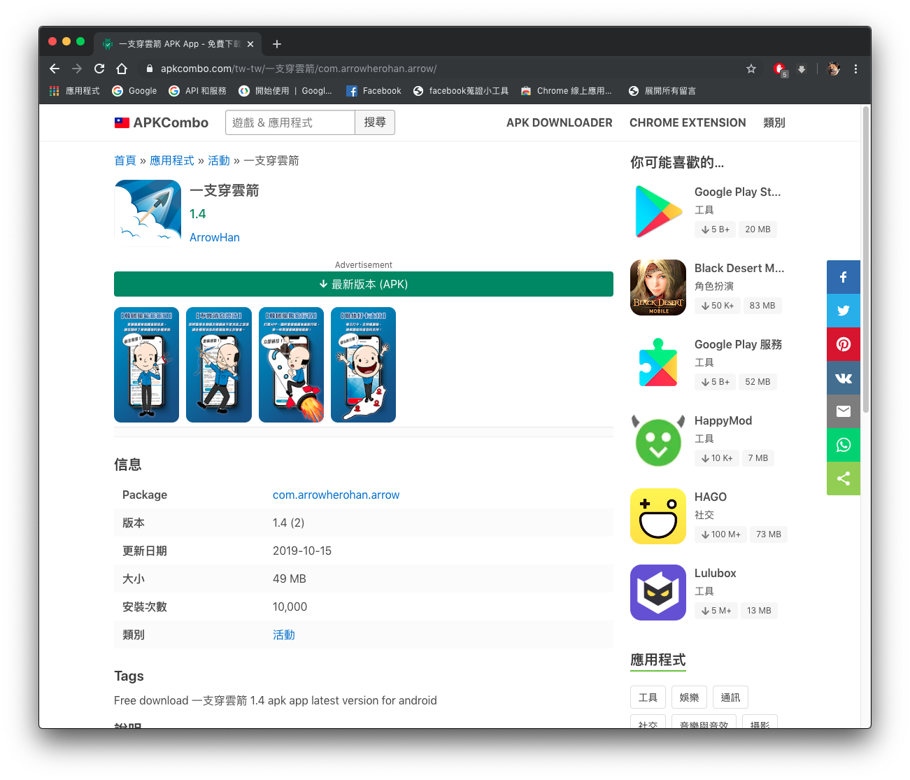
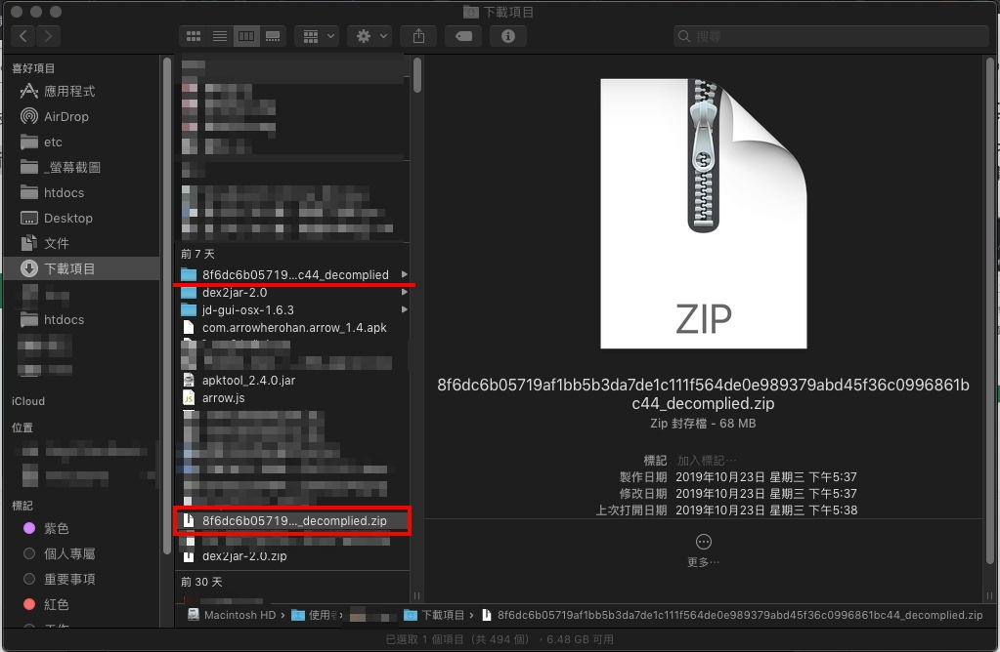
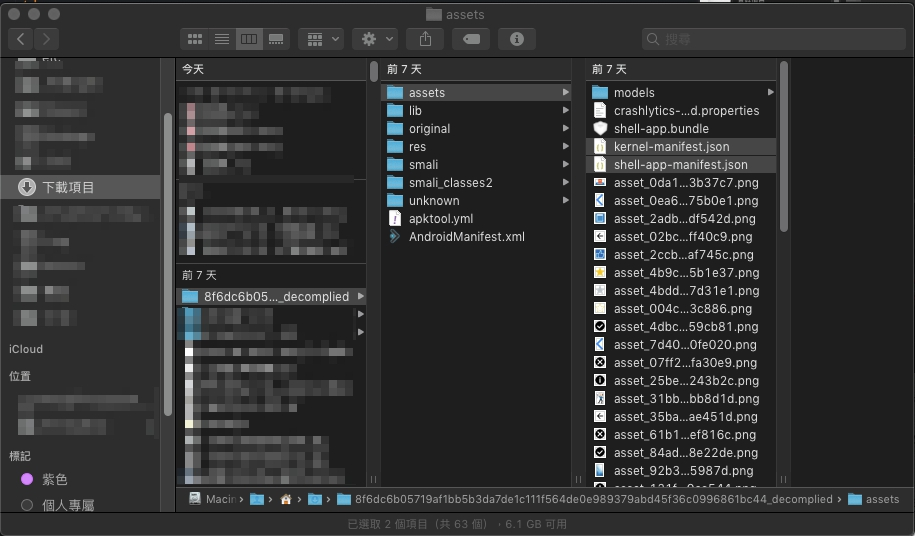
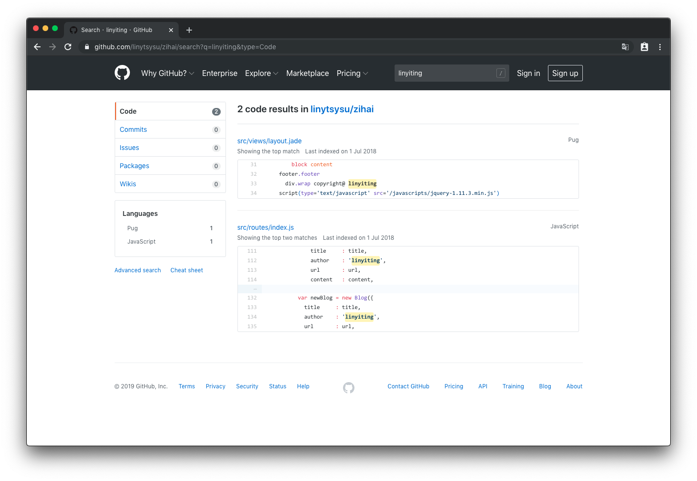
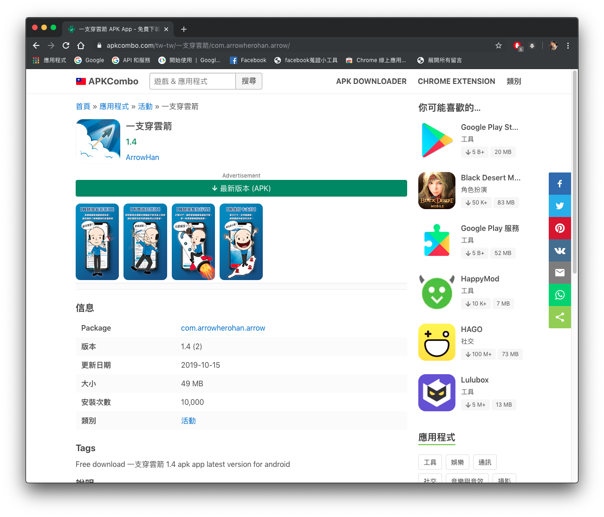
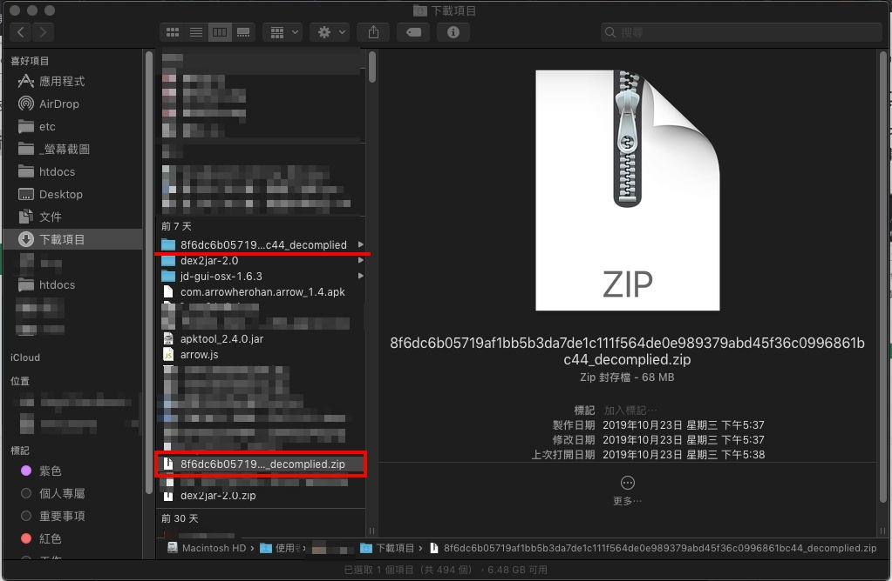
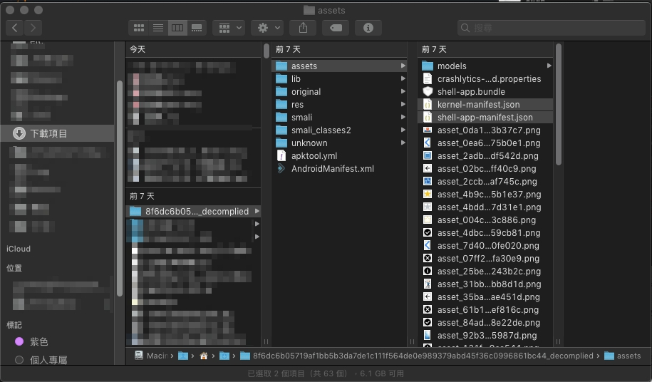
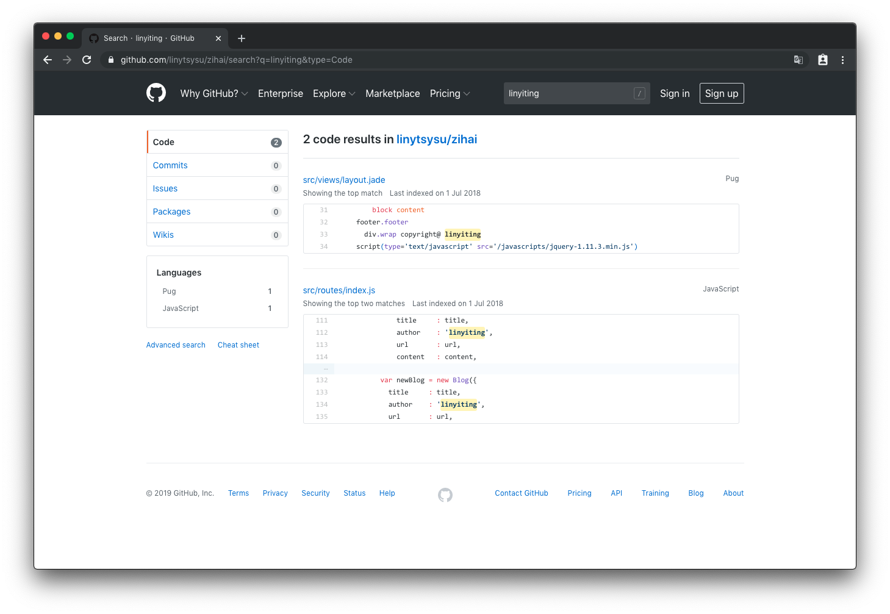

【解構】一隻穿雲箭 解構紀錄
2019年10月30日星期三 16:01
先說結果：
本開發者拆解「一支穿雲箭」這個手機APP，但背後開發者疑似為中國深圳人？以下是拆解並深入探討的解構的過程，若有錯誤或是不妥、問題，請在Github上留Issues給我，謝謝指教！
相關新聞
【新聞】7年級韓粉
研發挺韓APP
這名APP開發者是30多歲鋼鐵韓粉，昨接受本報專訪表示，開發這款APP並不是想出名，純粹不捨韓每天被誣陷，想到自己有寫程式的專長，或許能幫上忙。他自豪說，「這應該是第1個打總統選戰的APP」。
【影片】突破同溫層
挺韓APP開發者:全民看綠真面目！ 新聞大白話20191025
經韓團隊認證APP！在影片中09：37韓辦發言人 何庭歡解說一支穿雲箭APP的身世？
【新聞】韓粉個資恐被中國鎖定？快回家檢查長輩手機！資訊專家提
4
疑點，揭挺韓
APP「一支穿雲箭」真面目
「一支穿雲箭」APP ，從何而來？根據《中國時報》報導，這款「一支穿雲箭」APP 是由一位 30
多歲的鋼鐵韓粉開發的，他因不捨韓每天被誣陷，加上自己有寫程式專長，因此自掏腰包製作這款挺韓
APP，他還說這應該是第 1 個打總統選戰的 APP。
【新聞】韓國瑜網路居弱勢！科技青年創「一支穿雲箭」APP 韓粉可精準掌握黑韓訊息、發動反擊
外傳「一支穿雲箭」APP的背景是中資，事實卻是幾個支持韓國瑜的年輕人，有人擁有寫程式的能力，又想為韓國瑜進一己之力，眼看民進黨網軍系統性地操作，國民黨只能一路挨打，發現韓粉的凝聚力與行動力雖然強，但大多在臉書社團或通訊軟體群組裡「取暖」或「自爽」。
解構紀錄
使用手機版擷取封包APP，試著擷取封包紀錄觀看來源為何？
實驗結果：此款APP為避免有心人士擷取呼叫封包設有防擷取功能！
如影片中時間處 01:00 開始，開啟擷取程式並執行一隻穿雲箭，就無法取得相關資訊。
反組譯APP，觀看其程式碼並尋找蛛絲馬跡
- 首先我們必須要有APP的安裝檔
.apk
從各大Apk網站可以輕鬆入手 play 商店上的app原始檔.apk

img URL: https://i.imgur.com/E1PeSlX.png
來源：apkcombo-search → 一支穿雲箭
- 把apk檔拿去線上反組譯網站反組譯
google → apk+decompiler
得到反組譯資料原始檔

→ img URL: https://i.imgur.com/51RpsXy.jpg
從原始碼中可以得到設定檔，裡面記載開發的相關訊息

→ img URL: https://i.imgur.com/nBhKUU0.jpg
- 查看設定檔
從檔案 /assets/kernel-manifest.json
"publishedTime": "2019-09-16T21:21:42.975Z",
這個訊息可以得知這個app可能2019/09/16就已經做好了。
從檔案 /assets/shell-app-manifest.json 可以得知更多此app的相關訊息，包括部屬到手機雙平台的商店資訊等，其中令人矚目的是這個
"bundleUrl":
"https://d1wp6m56sqw74a.cloudfront.net/%40arrowhan%2Farrow%2F1.4%2F4ab06662502c67921c982759564ba9f1-35.0.0-android.js",
相關技術知識：
運行的程式碼可以部屬在Server端，來確保App的更新狀態，也就是說運行APP的真正程式碼位置就在這。
打開潘朵拉的盒子，查看程式碼
於是我們 “bundleUrl”
這個網址，打開來稍微整理一下程式碼看起來比較容易閱讀，並且使用arrow等相關關鍵字。
搜尋結果中，找到APP頁面的檔案路徑，檔案路徑中藏著一個開發者名字linyiting，便以這個名字下去搜尋他是否會相關技術開發、相關開發技術經歷有無相同等？
在開發者的github中找到一些訊息，他是中國深圳的開發者，而其中專案部分他的履歷資料，也記載著開發者的個人資料等…
雖不排除有可能同名同姓會同樣技能的開發者，
但比對寫作風格，這位開發者的專案庫的linytsysu/zihai這個專案裡的程式碼有跡可循！
像是 author: 'linyiting'
這部份對比下來完全和APP裡發現的檔案路徑/Users/linyiting/Desktop/Arrow/arrow/一模一樣！

→ img URL: https://i.imgur.com/Apcktbv.png
這樣是否可以合理的懷疑「一隻穿雲箭」APP的開發者就是這位來自中國深圳的開發者所撰寫？
附上查找時的螢幕側錄：
PS:若有需要請尋找本作者，轉載請告知。
時間點整理：
- 02:22 比對此APP一支穿雲箭拆解後內容與安卓商店上的一支穿雲箭APP
application ID 相同。
- 02:52 真正的程式碼位置網址，部屬在server端
- 03:50 搜尋APP程式開發者的訊息
- 04:50 尋找此開發者是否會使用相關技術(React Native等)
- 05:30 符合寫作風格與慣用署名用法
以上是紀錄發現一支穿雲箭疑似來自中國開發的過程，有誤請指教，謝謝。
後記
這篇紀錄在11月初完成。
10月下旬，經新聞媒體報導，這個APP為"一位"30多歲的韓國愉支持者因為會寫程式開發而成，但在後來本開發者繼續查證的過程中，在11月下旬變成"一群"熱情韓粉利用專長而開發？
不論如何，身為資訊傳播者、程式開發者都應該盡「資訊資料正確性」的責任，勿作散播不實訊息、假新聞的打手！
【解構】一隻穿雲箭 解構紀錄
2019年10月30日星期三 16:01
先說結果：
本開發者拆解「一支穿雲箭」這個手機APP，但背後開發者疑似為中國深圳人？以下是拆解並深入探討的解構的過程，若有錯誤或是不妥、問題，請在Github上留Issues給我，謝謝指教！
相關新聞
解構紀錄
使用手機版擷取封包APP，試著擷取封包紀錄觀看來源為何？
實驗結果：此款APP為避免有心人士擷取呼叫封包設有防擷取功能！
如影片中時間處
01:00開始，開啟擷取程式並執行一隻穿雲箭，就無法取得相關資訊。反組譯APP，觀看其程式碼並尋找蛛絲馬跡
.apk從各大Apk網站可以輕鬆入手 play 商店上的app原始檔
.apk
img URL: https://i.imgur.com/E1PeSlX.png
來源：apkcombo-search → 一支穿雲箭
google → apk+decompiler
得到反組譯資料原始檔

→ img URL: https://i.imgur.com/51RpsXy.jpg
從原始碼中可以得到設定檔，裡面記載開發的相關訊息

→ img URL: https://i.imgur.com/nBhKUU0.jpg
從檔案
/assets/kernel-manifest.json這個訊息可以得知這個app可能2019/09/16就已經做好了。
從檔案
/assets/shell-app-manifest.json可以得知更多此app的相關訊息，包括部屬到手機雙平台的商店資訊等，其中令人矚目的是這個相關技術知識：
運行的程式碼可以部屬在Server端，來確保App的更新狀態，也就是說運行APP的真正程式碼位置就在這。
打開潘朵拉的盒子，查看程式碼
於是我們 “bundleUrl” 這個網址，打開來稍微整理一下程式碼看起來比較容易閱讀，並且使用
arrow等相關關鍵字。搜尋結果中，找到APP頁面的檔案路徑，檔案路徑中藏著一個開發者名字
linyiting，便以這個名字下去搜尋他是否會相關技術開發、相關開發技術經歷有無相同等？在開發者的github中找到一些訊息，他是中國深圳的開發者，而其中專案部分他的履歷資料，也記載著開發者的個人資料等…
雖不排除有可能同名同姓會同樣技能的開發者，
但比對寫作風格，這位開發者的專案庫的
linytsysu/zihai這個專案裡的程式碼有跡可循！像是
author: 'linyiting'這部份對比下來完全和APP裡發現的檔案路徑/Users/linyiting/Desktop/Arrow/arrow/一模一樣！
→ img URL: https://i.imgur.com/Apcktbv.png
這樣是否可以合理的懷疑「一隻穿雲箭」APP的開發者就是這位來自中國深圳的開發者所撰寫？
時間點整理：
application ID相同。以上是紀錄發現一支穿雲箭疑似來自中國開發的過程，有誤請指教，謝謝。
後記
這篇紀錄在11月初完成。
10月下旬，經新聞媒體報導，這個APP為"一位"30多歲的韓國愉支持者因為會寫程式開發而成，但在後來本開發者繼續查證的過程中，在11月下旬變成"一群"熱情韓粉利用專長而開發？
不論如何，身為資訊傳播者、程式開發者都應該盡「資訊資料正確性」的責任，勿作散播不實訊息、假新聞的打手！